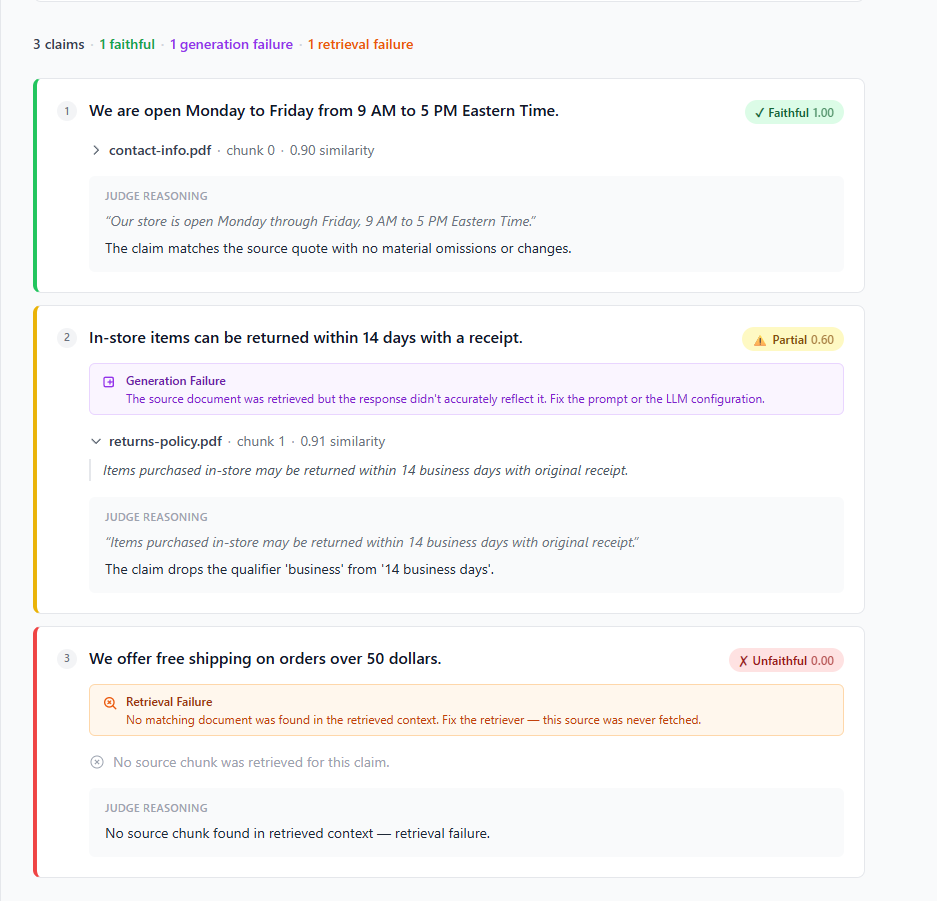

A wrong answer from your RAG system either means the right document was never retrieved — or it was retrieved and the AI misrepresented it. These need completely different fixes. No other tool makes this distinction.

You've built a RAG system. Sometimes the LLM gives a wrong answer. You open your observability tool and see: faithfulness: 0.6. Now what?
That number tells you something went wrong. It doesn't tell you whether the right document was never fetched — in which case you fix your search — or whether it was fetched and the AI ignored what it said — in which case you fix your prompt. Those are completely different problems.
Current tools measure. ContextLens diagnoses. Every flagged claim comes with a category: retrieval failure or generation failure. You always know which problem you have before you touch anything.
The attribution threshold was initially calibrated on near-verbatim test data. When run against an actual policy-document RAG system, correctly sourced claims were being miscategorized as retrieval failures because real LLM paraphrases score differently than verbatim extractions. The fix — a three-band confidence model — came from specific evidence from specific traces, not guesswork. Every calibration decision is documented in the build log with the exact claim texts and similarity scores that drove it.